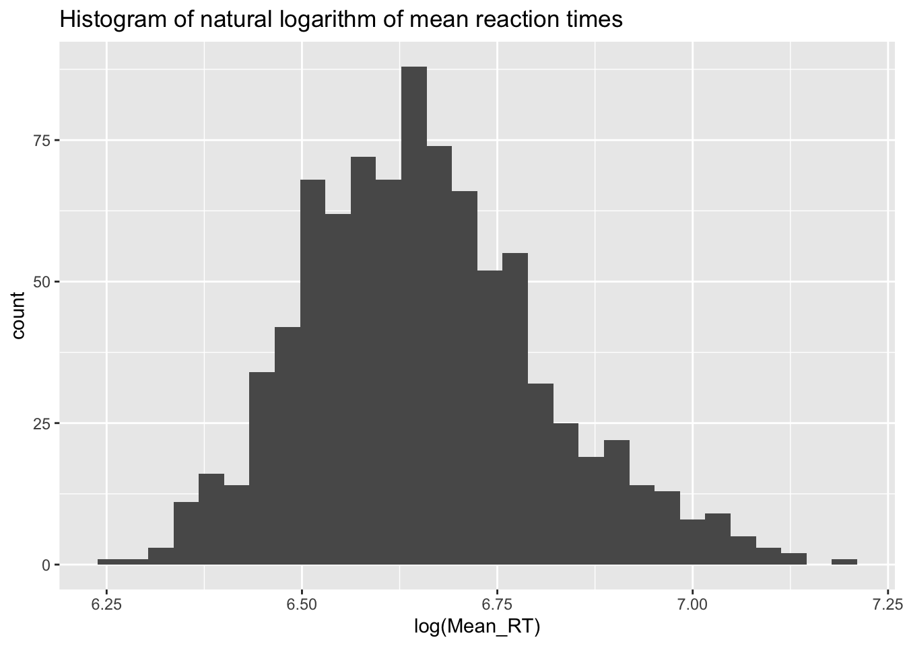

#install.packages("languageR") # if needed, uncomment and run (in console)
eng <- languageR::englishTransform continuous variables
Objective
Students will transform continuous variables in several ways.
Why transform?
When continuous are not normally distributed, it is often useful to transform them to (try to) them more normally distributed.
How to transform?
There are several common transformations of continuous variables.
Natural logarithm
A (very) common transformation of continuous variables, especially word frequency, is to take the natural logarithm (with the log() function). Word frequencies often follow a Zipfian distribution (see the first minute and a half of this V-Sauce video to learn what this means). Taking the natural logarithm (often abbreviated as “log”) makes the Zipfian distribution more normally distributed.
Let’s take a look at the frequency of words in the CELEX corpus, as given in the english dataset made available in the languageR R package.
Note: Because the frequencies are already log-transformed, we’ll untransform them by taking the exponent (which is the opposite of the log) in order to see the original distribution of frequencies.
Get the data
Plot raw frequencies
library("tidyverse")── Attaching core tidyverse packages ──────────────────────── tidyverse 2.0.0 ──
✔ dplyr 1.1.4 ✔ readr 2.1.4
✔ forcats 1.0.0 ✔ stringr 1.5.1
✔ ggplot2 3.4.4 ✔ tibble 3.2.1
✔ lubridate 1.9.2 ✔ tidyr 1.3.1
✔ purrr 1.0.2
── Conflicts ────────────────────────────────────────── tidyverse_conflicts() ──
✖ dplyr::filter() masks stats::filter()
✖ dplyr::lag() masks stats::lag()
ℹ Use the conflicted package (<http://conflicted.r-lib.org/>) to force all conflicts to become errorseng %>%
ggplot(aes(exp(WrittenFrequency)))+
geom_histogram()`stat_bin()` using `bins = 30`. Pick better value with `binwidth`.As we can see, the distribution of frequencies is not normally distributed. For fun, let’s also do a Shapiro-Wilk normality test (because we have fewer than 5,000 tokens in the dataset).
s1 <- eng %>%
pull(WrittenFrequency) %>%
exp() %>%
shapiro.test()
s1
Shapiro-Wilk normality test
data: .
W = 0.21867, p-value < 2.2e-16cat("p-value of Shapiro-Wilk test of raw frequencies: ", s1$p.value)p-value of Shapiro-Wilk test of raw frequencies: 9.007604e-88Plot the log frequencies
eng %>%
ggplot(aes(WrittenFrequency))+ # already log-transformed by dataset creator
geom_histogram()`stat_bin()` using `bins = 30`. Pick better value with `binwidth`.As we can see, the distribution looks a lot more normal than the original, raw frequencies. For kicks, let’s do a Shapiro-Wilk normality test on the log-transformed frequencies.
eng %>%
pull(WrittenFrequency) %>%
shapiro.test()
Shapiro-Wilk normality test
data: .
W = 0.99281, p-value = 2.047e-14As we see, the p-value is below 0.05 and thus still suggests a non-normal distribution. However, it should be noted that as the number of observations increases, the likelihood of getting a (supposed) non-normal distribution increases. It’s for this reason that the Shapiro-Wilk test doesn’t allow more than 5,000 tokens.
Box-Cox transformation
Another transformation of continuous variables is the Box-Cox transformation, named after George Box and David Cox who proposed the transformation in a paper in 1964. See an explanation of the Box-Cox transformation here.
Rling package
Let’s look at another dataset. Download the Rling R package from this website and install it by following the directions there.
# after downloading the 'Rling' R package with a web browser...
# install.packages("/Users/ekb5/Downloads/Rling_1.0.tar.gz", repos = NULL, type = "source")Let’s get the ELP (English Lexicon Project) dataset from that package.
library("Rling")
data(ELP)Plot raw mean reaction times
ELP %>%
ggplot(aes(Mean_RT))+
geom_histogram()+
labs(title = "Histogram of raw mean reaction times")`stat_bin()` using `bins = 30`. Pick better value with `binwidth`.Looks somewhat normally distributed, but with right skew (a right tail).
Let’s look at the distribution when transformed with the natural logarithm.
ELP %>%
ggplot(aes(log(Mean_RT)))+
geom_histogram()+
labs(title = "Histogram of natural logarithm of mean reaction times")`stat_bin()` using `bins = 30`. Pick better value with `binwidth`.
That moved the mass of the bell curve to the right a bit, and shortened the right tail.
Now let’s do a Box-Cox transformation of the mean reaction times using the boxcox() function from the MASS R package and draw a histogram.
bc <- MASS::boxcox(ELP$Mean_RT ~ 1, lambda = seq(-10, 10, 1/100))lambda <- bc$x[which.max(bc$y)]
print(lambda)[1] -1.05ELP %>%
mutate(bc_rt = (Mean_RT ^ lambda - 1) / lambda) %>%
ggplot(aes(bc_rt))+
geom_histogram()+
labs(title = "Box-Cox transformed mean reaction times")`stat_bin()` using `bins = 30`. Pick better value with `binwidth`.Residuals of linear regression
One of the assumptions of linear regression is that the residuals are normally distributed with a mean residual of zero. Let’s build a linear regression model of mean reaction times as a function of three predictor variables and plots the distribution of the residuals. Next, let’s build the same model, but with Box-Cox transformed mean reaction times, and plot the residuals of this second model.
Raw residuals
First, let’s fit a linear model with the raw mean reaction times.
m1 <- ELP %>%
lm(Mean_RT ~ Length + log(SUBTLWF) + POS, data = .)Mean raw residual
What’s the mean raw residual? How close is it to zero?
cat("Mean of the residuals = ", mean(residuals(m1)))Mean of the residuals = 1.195004e-15Histogram of raw residuals
tibble(res = residuals(m1)) %>%
ggplot(aes(res))+
geom_histogram()+
ggtitle("Histogram of raw residuals")`stat_bin()` using `bins = 30`. Pick better value with `binwidth`.Q-Q plot of raw residuals
Q-Q (quantile-quantile) plot are also useful for visualizing residuals of a linear regression model. We can use two functions here of our ol’ friend ggplot. To read about the nitty-gritty of Q-Q plots, knock yourself out here and/or here. The quick-and-dirty interpretation is that we want the points to fall along the diagonal line, because that diagonal line represents a normal distribution.
res <- residuals(m1)
ggplot(tibble(residuals(m1)), aes(sample = res))+
stat_qq()+
stat_qq_line()+
ggtitle("Q-Q plot of raw residuals")Box-Cox residuals
Let’s fit a linear model with Box-Cox transformed mean reaction times.
m2 <- ELP %>%
mutate(bc_rt = (Mean_RT ^ lambda - 1) / lambda) %>%
lm(bc_rt ~ Length + log(SUBTLWF) + POS, data = .)Mean Box-Cox residual
cat("Mean of the residuals = ", mean(residuals(m2)))Mean of the residuals = -1.570861e-21Histogram of Box-Cox residuals
tibble(res = residuals(m2)) %>%
ggplot(aes(res))+
geom_histogram()+
ggtitle("Histogram of Box-Cox residuals")`stat_bin()` using `bins = 30`. Pick better value with `binwidth`.Q-Q plot of Box-Cox residuals
res = residuals(m2)
ggplot(tibble(res), aes(sample = res))+
stat_qq()+
stat_qq_line()+
ggtitle("Q-Q plot of Box-Cox residuals")